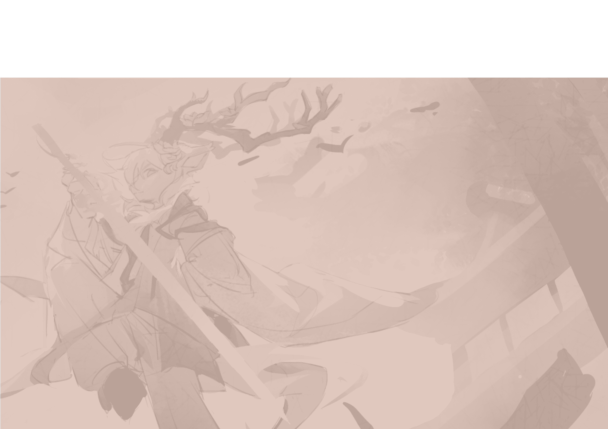

欢迎来到西岚屿档案馆！欢迎来到我的世界！
档案馆正在搭建中，敬请期待！
参观提示：
【电脑】你可以通过左侧的列表来游览西岚屿的世界设定和组织设定
【手机】请点击左上角的“西岚屿档案馆”按钮来游览西岚屿
这里是存放花下青鹿的原创世界观 ⌈ 西岚屿 ⌋ 、衍生的OC设定以及一些奇思妙想的地方。西岚屿是鹿鹿课余幻想的产物，当前正基于Minecraft进行可视化构建。西岚屿的主要创世者是@花下青鹿，特别感谢亲友 @罐装鳕鱼堡 和 @夢予報银焰 的协助创作。艺术创作，请勿当真；如有雷同，纯属巧合；虚构演绎，请勿模仿。
愿你在西岚屿的世界里，找到属于你的那一份特殊的美。
初衷与愿景
在这个信息爆炸的时代，拥有一片完全属于自己的数字空间是一件很奢侈但也很有意义的事情。我不希望我的创作被算法裹挟，也不希望它们淹没在碎片化的信息流中，更不希望被自己遗忘。因此，我决定亲自动手编写并搭建这个网站，将我的所思所想记录下来。
这里的每一行代码，每一处设计，都承载着我对“美”的理解。虽然它可能不够完美，甚至有些简陋，但它是真实的，是有温度的。
网页就只有非常简单的HTML和CSS，没有使用任何复杂的框架或库。这是因为我希望保持页面的轻量级和纯粹，绝对不是因为可以直接拿公选课期末大作业改。
版权协议
以下内容为网站安全规范化说明，方便笔者维权所用……如果你真心喜欢西岚屿的设定，相信下面的内容并不会影响你创作的热情和思路！
为了保证作品质量和发扬互联网开放共享精神，本文对花下青鹿的作品制定了版权协议。
除特殊的作品之外，我免费公开的作品均遵循 CC-BY-NC-SA 4.0 协议授权，但协议部分内容有所不同，具体可见下文。特殊作品使用的协议以作品简介的为准。
本文旨在介绍所有关于我的作品的版权协议标准和要求，会用通俗易懂的语言解释，方便您合理的使用我的作品~
违反协议的行为不仅会损害原作者的创作热情，而且会影响整个版权保护环境。强烈呼吁你能够在使用作品时遵守协议。
本协议主要针对抄袭、盗用、洗稿、营销号和无良媒体等。正常遵守协议的使用行为不会对你产生负面影响，营造良好的创作环境是每个创作者的期望！
适用范围
所有“花下青鹿”账号在所有公众平台发布的免费公开的原创内容。（在本站中以“原创”或 没有标识 为标识）
所有在公众平台上发表的基于“西岚屿”世界观设定和“鹿瑞岚”OC设定的衍生（含二创）作品。（在本站中以“转载”为标识）
协议内容
简单来说，你可以在不经过我同意的情况下：
- 放心随意的将作品用于个人欣赏使用，不进行任何商业用途。
- 友好的引用转发我的作品，只需要标上我的名字和出处就好。
- 友善的对我的作品和设定进行二创，欢迎投稿给我喔～
具体来说，本协议基于CC-BY-NC-SA 4.0 协议授权，但有做一定程度上的更改。
1. 署名-BY：
- 转载/二创我的作品需要署名原作者发布
- 署名的内容包括：原作者名字 + 出处链接（我的名字：花下青鹿 TheCyandeer）
- 请采用恰当且能让原作者接受的形式，将署名信息展示出来。比如：放在视频/文章内容里并念出来/重点标记出来、写入视频/文章正文里。不接受放在置顶评论和视频/文章简介里。
2. 非商业性使用-NC：
- 欢迎转载、引用和二创我的作品，且不需要和我沟通。但你只能个人使用，不能用作商业用途。例如：直播使用、付费解锁观看等。
- 你转载、引用和二创我的作品后产出的作品，只能对外免费公开展示。但产生的流量收益在我这不算做商业用途，你创作出的作品版权归你所有，我只保留对我OC设定和世界观设定的版权。
- 你转载、引用和二创我的作品后产生的作品需要加入些自己的创新点，比如配音、解说。不允许搬运、洗稿和AI创作。
- 你需要遵循上述署名规则，在不违背公序良俗和法律法规的前提下进行创作。
- 你不得盗用和抄袭（声称这是自己的原创），或暗示这个作品是你的原创作品。
3. 相同方式共享-SA：
- 如果对我的作品进行了二创，你必须依据本创作采用的许可和协议，再次分发你的创作。
- 也就是采用 CC-BY-NC-SA 4.0 协议。
其他内容
所有引用了第三方作品元素的作品，引用元素的版权归属于第三方。
本网站的文字内容、图片内容、音乐内容和视频内容遵循上述的协议。本网站的源代码（仅包含 css、js）的代码部分采用特殊的协议（详见github页面）。
例如：Minecraft 商标版权属于 Mojang 和 Microsoft。游戏内使用的模组版权归资源的作者所有。均与我无关。
附加说明
当您查阅和使用我的作品时，就代表您同意本文的协议，否则请停止查阅/使用我的作品。
我原创作品内提及的第三方作品版权归第三方所有，与本人无关。
如果您需要获取协议之外的授权，请与我联系。
本协议的最终解释权归花下青鹿所有，且保留对上述规则边缘化情况进行界定的权力。
二创说明
二创的核心是热爱和分享，保持对原作的热爱，享受创作的过程，并与同好友好交流~
西岚屿十分欢迎大家的二创，但请遵守如下内容：
1. 请尊重西岚屿的设定，尽量遵循西岚屿的世界观、角色设定和故事基调，并在西岚屿设定的基础上进行二创，不要太跳脱于原生设定。二创的魅力在于你的独特视角，不要害怕加入自己的理解和创新，但也要注意不要完全脱离原作的核心精神。
2. 请尊重他人的二创成果，不要人身攻击或贬低作者的付出；尊重二创的多样性，包容不同的风格，不必强行要求别人的二创必须完全符合原作设定；不喜欢 ≠ 不好，你可以不喜欢某个二创的风格、CP或剧情，但这并不代表作品本身质量差，尝试从技术（文笔、画工、分镜等）角度客观评价；如果某些二创内容让你感到不适（如雷点CP、黑化角色），可以选择屏蔽或安静离开，而非争论；未经作者同意，不要私自修改、搬运或商用他人的二创作品【违反二创守则的作品除外】
3. 请不要抄袭、套用、搬运、无端联想其他受版权保护的原创设定内容（如：知名IP、无关内容等）到西岚屿世界观内。
4. 请不要在与西岚屿无关的社群或圈子中关联或提及本世界观，避免引发侵权行为。
5. 遵守法律法规、社会道德和发布平台的规则，不侵犯他人的权益，不做违法违纪的二创！
6. 避免涉及敏感话题，例如现实存在的政治、宗教或社会议题。
7. 如果你对西岚屿的设定有一些建设性的意见，欢迎以友好的方式表达，不要恶意攻击或歪曲设定内容。
8. 请勿过于较真设定的细节内容，不要以自然科学的角度剖析魔法设定，过于较真是不友好的行为。
9. 请不要用现实存在的历史故事与事物，来类比或定论西岚屿的故事和设定。
10. 二创内容及社区讨论不代表西岚屿主创的观点，如有出现与主创团队内容有冲突的情况，请以官方消息为准。
11. 二创内容请标注原作的名称、作者或版权持有者，以示尊重。并在作品标题或描述中说明这是二次创作，避免让人误以为是官方内容。
12. 西岚屿设定采用《署名—非商业性使用—相同方式共享 4.0国际(CC BY-NC-SA 4.0)》的协议授权，请尊重原创作品，遵守授权协议，不要做出侵权行为。如需要更多其他的授权，请与主创团队联系。
13. 西岚屿设定内的所有角色、事件、地点、物品等，均为创作时的设定，与现实不存在任何联系。
14. 衍生二创内容与西岚屿主创团队无关，因二创导致的侵权行为，由二创原作者承担相关责任。
结语
真没想到你能读到这里。其实这么多条条框框只是为了防止有心之人钻漏洞……如果你真心喜欢西岚屿的设定，上面这些内容并不会影响你的创作热情！欢迎加入西岚屿的社群，与我分享你的创作。谢谢大家！！！